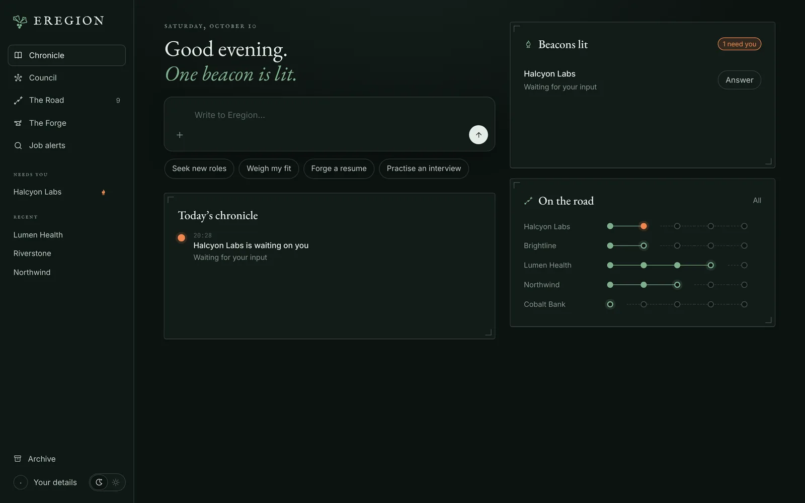
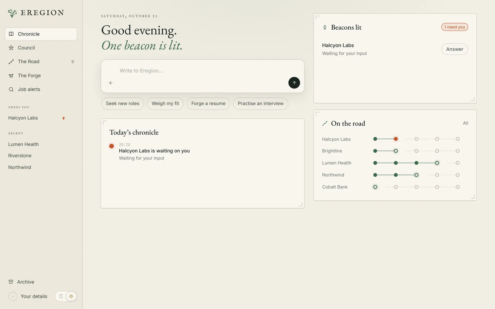

Council
Know where you stand before you apply.
Paste a link or a job description. Eregion compares it with your resume and returns a score out of 100, the evidence behind it, the gaps, and the questions only you can answer.
- Strengths and gaps cited from your own experience
- Correct it, pause it, or take over its browser at any time
- Keeps working on other tasks while it waits for you

